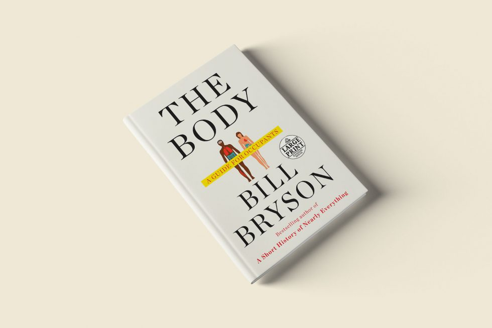
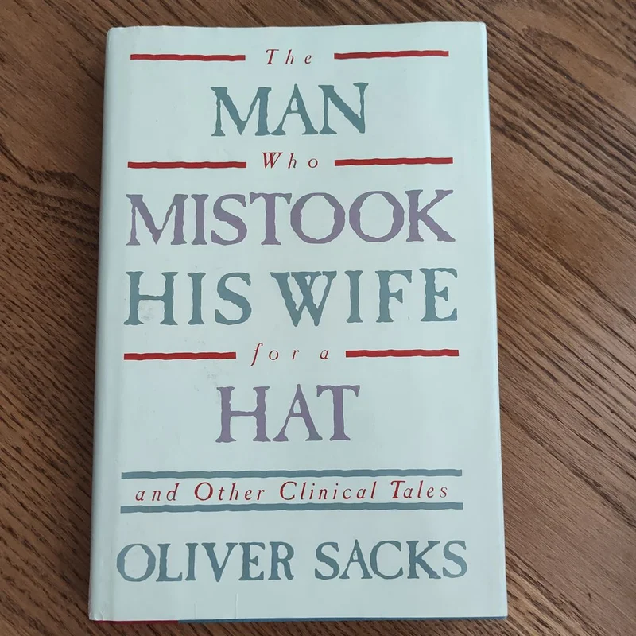

There are so many interesting books in today's world. It's really hard, at least for me, to choose one. I, for
one, prefer nonfiction books and always did. Let's narrow it down further, and talk solely about a
certain
type of nonfiction books. Medical nonfiction. I will list some of my favorite titles belonging to this subgenre
below:
The Body: A Guide for Occupants
Seven and a Half Lessons About the Brain
The Man Who Mistook His Wife for a Hat and Other Clinical Tales
Hallucinations
An Anthropologist on Mars: Seven Paradoxical Tales
Phantoms in the Brain: Probing the Mysteries of the Human Mind
And below, you may find a brief description of these captivating and enlightening books. I will attach a link to the page of each book in Goodreads which is my preferred website for discovering new books. There, you may find more information about each book as well as reviews from fellow readers.
The Body: A Guide for Occupants

This book is a great introduction to the human body. For those who are a little bit unfamiliar with the human body and the processes taking place within, it is truly a guide as it takes its readers on a journey inside, giving them an overview of the most relevant 'sites'.
After going on a tour through the body, if you remain fascinated with the
brain, then you may embark on a more personalised experience and read this tiny but incredibly informative book.
The Man Who Mistook His Wife for a Hat and Other Clinical Tales

And... if you wish to delve into the mysteries of brain even deeper, this book is for you. However, do not expect clarity. Be prepared to embrace the unknown and to remain wondering.
An exploration of visual, auditory and perceptual phenomena. Explanatory, filled with information that does not always inform, but is meant to keep the spark of mystery alive. Mystery never ends, when it comes to the human mind.